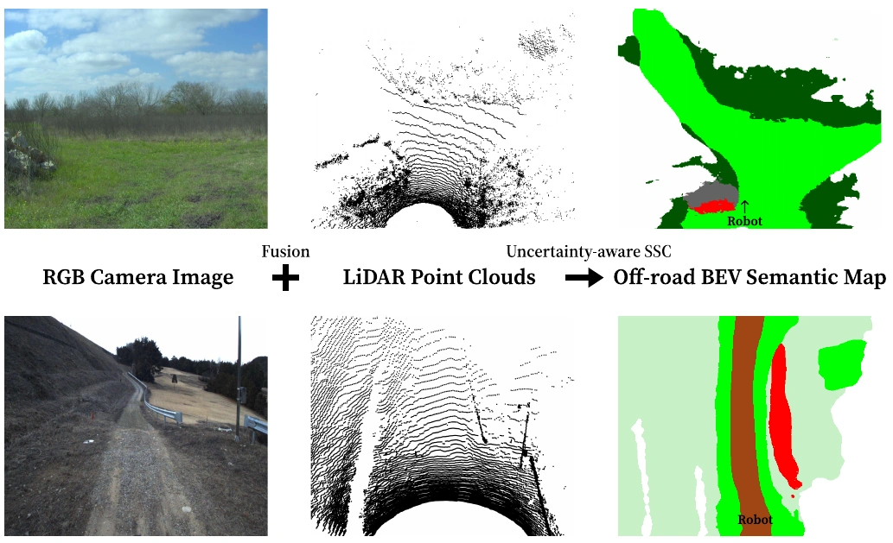
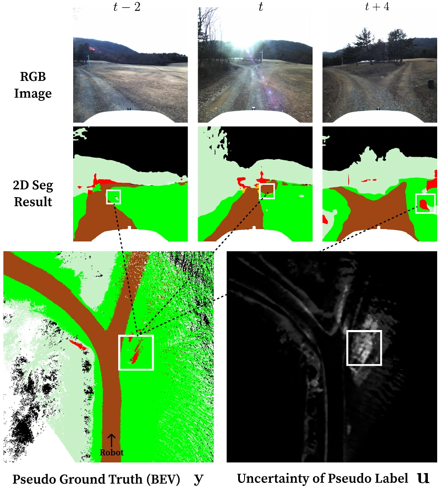
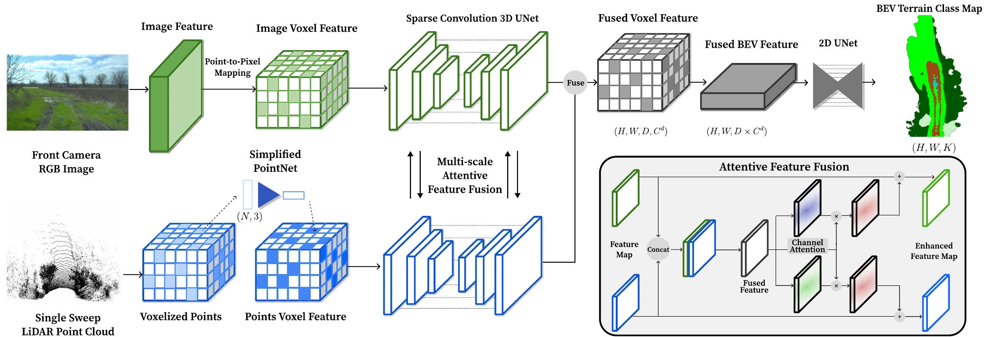
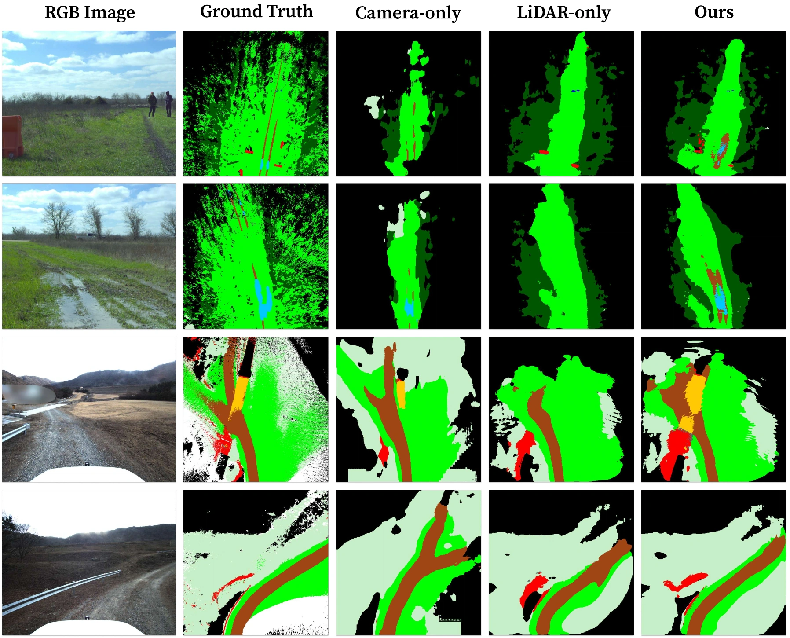
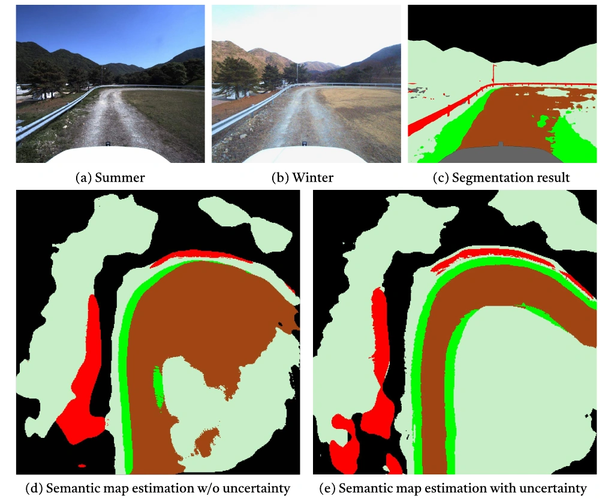

A single LiDAR scan and an RGB image.
A dense semantic map of the terrain ahead.

TL;DR Multi-scale sensor fusion improves terrain classification. Image-guided pseudo-labels provide supervision without manual 3D annotation, while uncertainty-aware training reduces the influence of unreliable labels.
The challenge
Off-road terrain changes.
Reliable 3D labels are hard to scale.
Unstructured terrain has ambiguous boundaries, varied textures, and complex geometry. A camera captures semantic detail but struggles to recover an accurate top-down layout; LiDAR measures structure precisely but is sparse and lacks visual texture.
Training a new model for each environment also requires costly 3D annotations. Changes in seasons, sensor setups, and terrain classes make that supervision difficult to reuse. Our approach addresses both problems: combine complementary sensors, and learn from image-guided labels while accounting for their uncertainty.
01 / Build the supervision
Learn from images.
Keep track of what is uncertain.

Accumulate predictions across time
A pretrained 2D segmentation model predicts terrain classes in RGB images. Paired LiDAR scans and robot poses project those predictions into a common BEV grid. Aggregating past and future observations produces denser labels for training.
Use disagreement as a signal
Confident image predictions contribute more to each point's class score. If observations disagree on a grid cell's class over time, its aggregated label has higher entropy and therefore higher uncertainty.
Reduce the weight of unreliable labels
An uncertainty-weighted cross-entropy loss puts less emphasis on ambiguous pseudo-labels. The network can learn from these imperfect labels without treating every prediction as equally reliable.
Temporal aggregation creates the training labels. At inference, the network uses only the current RGB image and a single LiDAR scan.
02 / Combine the sensors
Fuse geometry and semantics at multiple scales.
Separate sparse 3D U-Nets extract LiDAR and image voxel features. Attentive fusion exchanges complementary information at each level; a 2D U-Net then completes the dense BEV map.

03 / Evaluate the map
Preserve structure. Recover semantic detail.
Evaluated on RELLIS-3D and the authors' off-road driving dataset, fusion improves mapping over the camera-only and LiDAR-only baselines compared in the paper.

| Method | RELLIS-3D | Authors' dataset | ||
|---|---|---|---|---|
| mIoU (%) ↑ | Accuracy (%) ↑ | mIoU (%) ↑ | Accuracy (%) ↑ | |
| PyrOccNet Camera | 18.6 | 30.0 | 26.1 | 39.9 |
| TIM Camera | 17.6 | 30.5 | 25.6 | 40.9 |
| BEVNet LiDAR | 31.6 | 50.7 | 26.2 | 39.1 |
| Ours LiDAR + Camera | 36.1 | 52.9 | 32.6 | 47.1 |
Higher is better. All methods use measurements from the current timestamp at inference. Evaluation uses 3D annotations for RELLIS-3D and image-guided labels for the authors' dataset; unlabeled cells in the latter are excluded.
04 / Handle changing appearances
When summer labels meet winter terrain.
A segmentation model trained on summer images produces uncertain predictions on winter scenes. Using these predictions as equally reliable training targets can carry their mistakes into the BEV map.
In the paper's seasonal-shift experiment, uncertainty-aware optimization reduces the effect of noisy pseudo-labels and corrects much of the vegetation misclassified as dirt.
The weighting improves learning from uncertain supervision. The model can still be overconfident in occluded regions, a limitation discussed in the paper.

Read the abstract
Autonomous navigation in off-road conditions requires a precise semantic understanding of the surroundings, often represented in a bird's-eye view (BEV) for downstream tasks. Despite the success of end-to-end learning-based approaches in generating local semantic terrain maps from sensor data, their applicability in diverse off-road environments is hindered by limited 3D datasets and uncertain terrain characteristics. This paper proposes a scalable learning-based framework for generating dense semantic terrain maps in BEV. By fusing LiDAR and image data at multiple scales, our approach enhances the accuracy of the local semantic map estimated by an RGB image and a single LiDAR scan. Additionally, the network improves applicability across various off-road conditions without 3D annotations by leveraging uncertainty-aware, image-guided pseudo labels. Through extensive evaluation using diverse off-road driving datasets, we show that our method can improve both accuracy and adaptability in diverse off-road terrains, validating its efficacy in facilitating robust and reliable semantic terrain map estimation in varying off-road settings.
Citation
Download BibTeX ↓@inproceedings{kim2024scalable,
title = {Scalable Off-road Semantic Terrain Map Estimation using
Uncertainty-aware LiDAR-Camera Fusion},
author = {Kim, Ohn and Seo, Junwon and Ahn, Seongyong},
booktitle = {IEEE Intelligent Vehicles Symposium (IV)},
year = {2024}
}